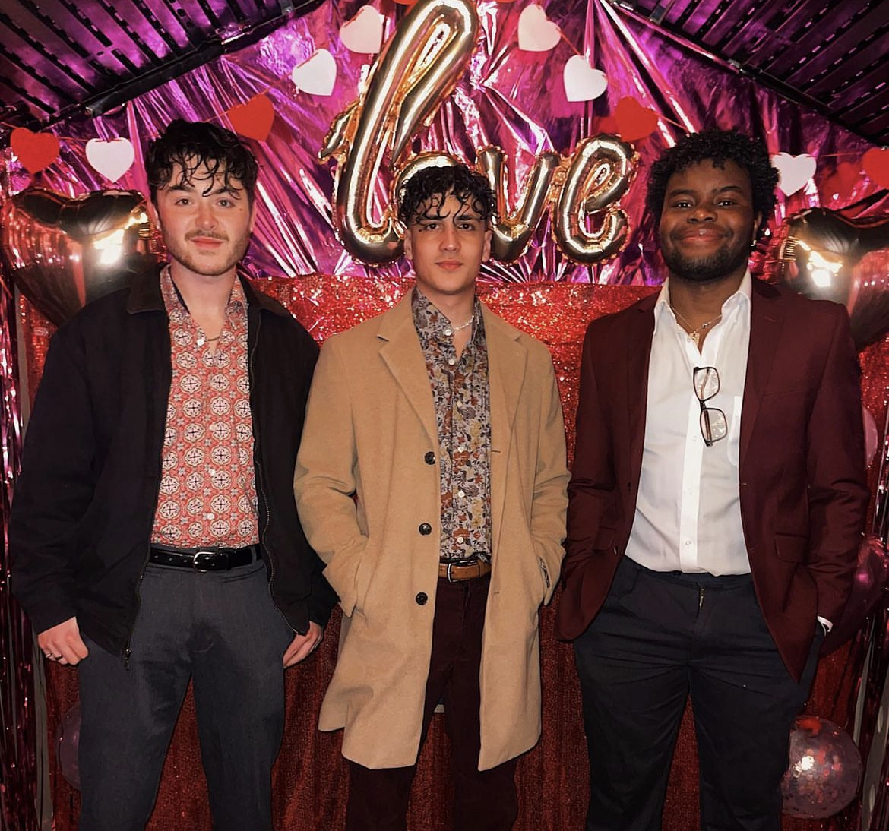

About Lucid Productions

Lucid Productions is a growing event planning and hosting business founded by University Of Maryland students Mervyn Akumbu, Jason Goldman, and Griffin Shirodkar. At our core, we pride ourselves in our convenience in making all arrangements and accommodations for our clients, catered specifically to their individual needs. We handle all aspects of the planning phase, including offering preliminary ideas for scheduling, catering, activity offerings, and location scouting. Following the planning phase, we also work closely with our partners on the designing of invitations, decorations, and specialized menu items for all events.
Having planned and carried out dozens of social events with hundreds of attendees including app launch parties, fraternity social events, and music performances, Lucid Productions is the premier organization for planning events in the University of Maryland community.
Connect with us on Instagram!